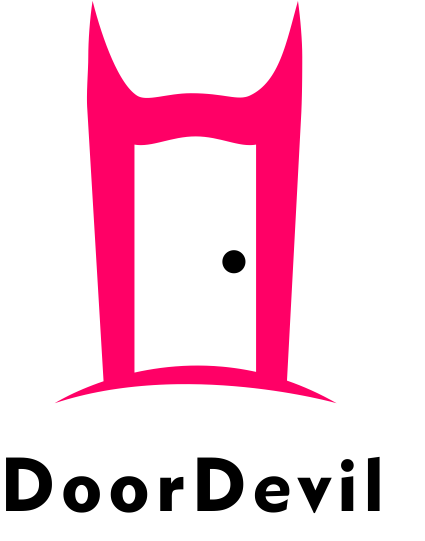

Pembuatan Logo
Logo merupakan aspek penting yang berperan sebagai identitas atau wajah bagi suatu produk maupun brand.
Dalam pembuatan logo diperlukkan beberapa langkah dasar hingga menjadi suatu logo yang ciamik dan relevan.
- Sebelum mulai membuat, alangkah baiknya bagi desainer untuk melakukan riset dengan melihat referensi-referensi desain logo yang dibuat oleh desainer lain untuk mendapatkan gambaran mengenai trend logo hingga aspek-aspek yang perlu diperhatikan pada suatu logo sesuai dengan deskripsi brand yang diperlukan.
- Buat sketch imajinasi logo pada kertas sebelum dibuat secara digital. Langkah ini sangat direkomendasikan guna mempermudah dalam proses digitalisasi nantinya.
- Gunakan software-software editor grafis seperti Adobe Illustrator, Adobe Phostoshop, CorelDraw, dsb. Pada percobaan kali ini saya menggunakan software CorelDraw 2018.
- Buat lembar kerja baru.
- Gunakan tools yang tersedia seperti shape tool, text tool, dsb. untuk membuat bentuk logo.
- Beri warna pada logo sesuai dengan konsep logo yang ditentukan.
- Lakukan eksport logo menjadi file png, jpg, dsb. Sesuai kebutuhan
Berikut merupakan hasil dari percobaan pembuat Digital Poster yang telah saya lakukan.
Software in Use: CorelDraw 2018
Sekilas Tentang Software
CorelDraw
by Alludo (Corel) Corp.
CorelDraw merupakan software editor grafis berbasis vector yang dibuat untuk pengguna desktop. Software ini biasa digunakan untuk membuat berbagai keperluan desain grafis, seperti poster, logo, ilustrasi, dsb.
Magic Shortcut
| Keys | Function |
|---|---|
| C | Align center (vertikal) |
| E | Align center (horizontal) |
| F9 | Preview fullscreen |
| Ctrl + D | Duplicate |
| Ctrl + I | Import |
| Ctrl + E | Eksport |
| H | Hand tool |
| F3 | Zoom out |
| F2 | Zoom in |
| Ctrl + Z | Undo |